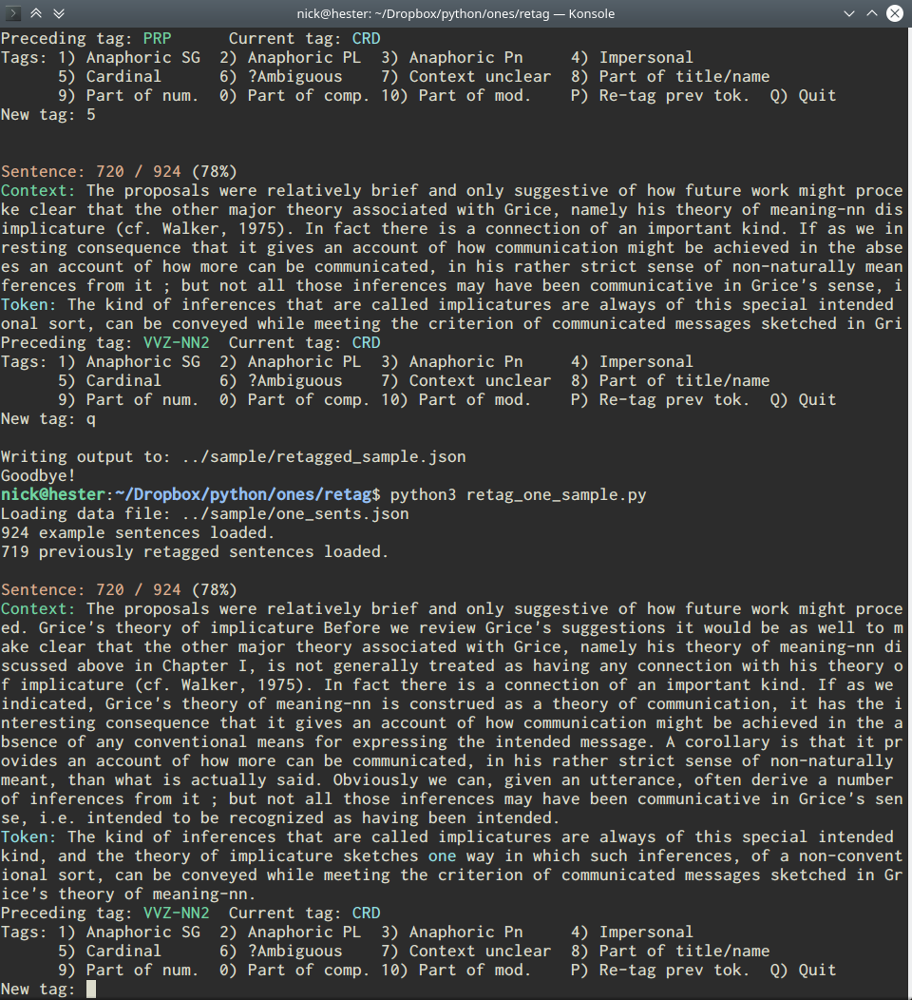

This is the final update on some corpus work I've been doing on anaphoric one. To read up on the background, see my first post on the topic and the more recent interim update.
So I've more or less completed this study. It took me a little while to get to finishing the last steps (getting a sample of the corpus, re-tagging the relevant tokens, and comparing the results) since I had to focus some of my attention on more pressing things at the beginning of the month and then spent most of the last week distracted by the covid-19 pandemic.
But the results are in, and as best as I can tell the frequency of anaphoric one following possessives is no different than it is elsewhere, at least in the British National Corpus (bnc). Given that this result clashes entirely with my intuitions, I am actually quite surprised with this result.
In what follows, I'll talk a bit about the hypothesis I'm testing, how I got the sample I used to test that hypothesis, the results of the comparison, and a bit about what is going on.
In my last post, I wrote about how I had collected tokens of the word one when it followed possessive elements (such as -'s, her, our, and so on). All of the scripts I wrote for this project are now available on my GitHub, cleaned up and ready for public (consumption|scrutiny).Using some Python scripts that I wrote, I re-tagged the data to more precisely describe each token of one. I discovered my first result: that contrary to my intuition (and the intuitions of many other native English speakers), anaphoric one can unambiguously occur immediately after possessive elements in English.
Of course, One of the goals of the project, in fact, was to find clear cases so that I would be able to study them in the future. In that sense, the project has been a success.I wanted to know more than just whether it is possible for anaphoric one to occur immediately after a possessive element. Intuitive judgments about such cases suggest that they should not occur, but in reality we have known for some time that intuitive judgments about grammaticality are gradient (see, for example, Chomsky 1965: 77ff), and that people sometimes produce sentences that are judged to be ungrammatical. Furthermore, as I've noted before, some speakers accept anaphoric one directly after possessives. As such, it shouldn't be surprising to find cases of this occurring in a corpus. The question is how frequently should we expect it to happen, and is the frequency at which it happens unusual?
A simple hypothesis (H₁) about the frequency is that if anaphoric one is degraded or ungrammatical for some speakers immediately following a possessive, then the frequency of tokens of anaphoric one will be lower immediately following a possessive than in the corpus as a whole. The logic here is that while all English speakers, as far as I am aware, use one, fewer accept or use it following a possessive, and so the expectation is that we should find fewer tokens in that environment. The null hypothesis (H₀) is that possessive elements have no effect on the frequency of one and the frequency of anaphoric one immediately following a possessive element will be the same as in the rest of the corpus.
To test hypothesis H₁, we need to know the frequency of anaphoric one in the corpus as a whole. Since re-tagging every token of one in the corpus would take far more time than would make sense, I decided to simply take a sample of the corpus and re-tag that.
I don't know whether the BNC is structured in such a way so as to distribute different kinds of texts throughout the corpus, so I decided to sample evenly from the corpus rather than taking a truly random sample. I settled on wanting around 1000 tokens in my sample, so the script I wrote to sample the corpus went through collected every 270th sentence containing a token of one.I arrived at 270 through a bit of trial and error, but I knew from my initial work on this project that there were 306,139 tokens of one in the corpus. Thus, to get 1000 tokens, I needed some figure around 306. This yielded 924 sentences containing tokens of one, and 1022 separate tokens.
The frequency of the tags found in the sample can be seen in the table below alongside the frequencies of the tags in the in the corpus as a whole. As can be seen, the frequencies are pretty close, so I'm fairly sure this sample is representative of the corpus as a whole.
| Tokens in corpus | Tokens in sample | |||
|---|---|---|---|---|
| Tag | Number | Percent | Number | Percent |
| PNI | 78525 | 25.65% | 276 | 27.01% |
| PNI-CRD | 21966 | 7.18% | 81 | 7.93% |
| CRD | 189299 | 61.83% | 613 | 59.87% |
| CRD-PNI | 4814 | 1.57% | 17 | 1.66% |
| NN2 | 11503 | 3.76% | 35 | 3.42% |
| NN0 | 1 | 0.00% | 0 | 0% |
| UNC | 27 | 0.01% | 0 | 0% |
| VVI | 2 | 0.00% | 0 | 0% |
| Total | 306139 | 1022 | ||
The next step was to re-tag every token of one in the sample, using the tag set I used to tag tokens of one following possessives. This was pretty tedious, as I hope the screenshot below makes clear.
With all the re-tagging complete, we can now compare the data. Most of the ambiguous/unclear tokens were ambiguous between numeral one indefinite one.For the purposes of comparison, I excluded any ambiguous tokens or any tokens where context was not sufficient to determine which tag it should receive. I also excluded tokens that were part of a title, since their presence shouldn't be affected by the presence of the possessive and because there was actually only one in the sample anyway (See my previous post for some more discussion). The frequencies are reported in the table below.
| After possessives | In sample | ||||
|---|---|---|---|---|---|
| Tag | Number | Percent | Number | Percent | |
| 1A1 | Anaphoric one singular | 94 | 17.80% | 161 | 15.94% |
| 1A2 | Anaphoric one plural | 17 | 3.29% | 36 | 3.56% |
| 1NC | Numeral one (alone) | 352 | 66.67% | 593 | 58.71% |
| 1NP | Numeral one (in compound) | 33 | 6.25% | 6 | 0.59% |
| 1NN | Numeral one (part of numeral) | 25 | 4.73% | 34 | 3.37% |
| 1NM | Numeral one (in modifier) | 7 | 1.33% | 21 | 2.08% |
| 1PI | Impersonal one | 0 | 0.00% | 102 | 10.10% |
| 1PA | Indefinite one | 0 | 0.00% | 57 | 5.64% |
| Total | 528 | 1010 | |||
Put another way, given the frequency in the sample, we should expect to find about 103 tokens of anaphoric one in the possessive data assuming the possessive has no affect on the distribution of anaphoric one.In the end, the frequency of anaphoric one after possessives is very similar to the frequency of anaphoric one in the sample. Combining singular and plural tokens, there are a total of 111 tokens of anaphoric one following possessives, or 21.02% of tokens of one, and there are 197 tokens in the sample, which is 19.50% of the tokens of one in the sample.
Additionally, the frequency of numeral one on its own is about 12% higher following a possessive than in the sample. The occurrence of one in other morpho-syntatic structures following possessives is also different, with a one-initial compound being much more common after a possessive, and one-initial sentential modifiers being far less common. Neither impersonal nor indefinite one immediately follow a possessive, and no tokens of indefinite one are observed after possessives.
The main result is that anaphoric one appears no less frequently immediately following a possessive than it does in the sample as a whole, falsifying hypothesis H₁ as proposed above. We cannot reject the null hypothesis (that the possessive has no effect on the distribution of anaphoric one).
I am actually very surprised by this result – it is not what I expected at all. I'm not at all sure why intuitive judgments do not line up well with the corpus data. There are a few explanations that I think are worth pursuing:
However, the results do not suggest the possessive has no effect on the elements that come after it. The results show that the numeral one is more frequent after possessives than in the corpus as a whole. I suspect there are two reasons for this. First, in the structure of the noun phrase, numerals follow directly after possessive elements, preceding adjectives and nouns (amongst other elements), so if a numeral occurs in a possessive at all, it will occur immediately following the possessive element. This is also probably why compounds beginning with one are so much more common after a possessive (as in her one-woman band). Since many such compounds are attributive modifiers, this is exactly where you'd expect to find them, so it makes sense that they would be more common directly after a possessive.
Second, the numeral probably takes up some of the distribution left by the absence impersonal and indefinite one. These elements do not occur at all following possessives, but this is hardly surprising since these elements are presumably pronominal, and pronouns do not occur inside the main structure of a noun phrase.
So in conclusion: A corpus study of the bnc shows that anaphoric one occurs directly after possessives, and the presence of the possessive does not depress the frequency at which anaphoric one occurs compared to the rest of the corpus. This is a suprising result, since the intuitive judgments of many native English speakers suggests that anaphoric one> should not be all that frequent immediately following a possessive element. I suggest above that work with an American English corpus (like the American National Corpus) might yield different results and suggest that a more direct comparison with noun phrase ellipsis might yield a better basis for understanding why the corpus data does not match native speaker judgments.